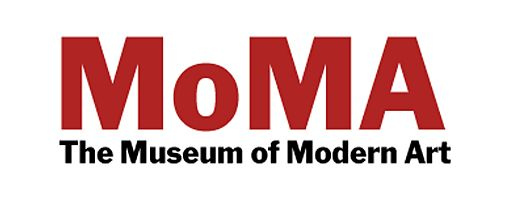
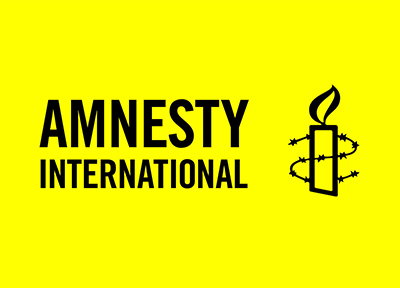
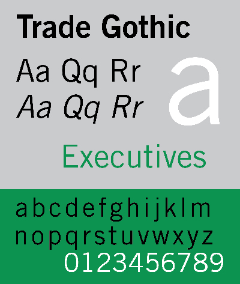
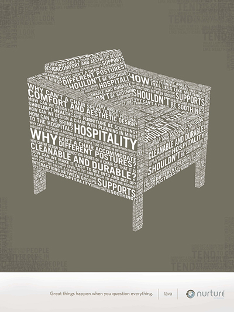

Franklin Gothic Examples
Franklin Gothic has been used as the main type in a few well known examples including a movie poster, album cover, and a TV network.

Adobe graphic displaying a quote from Morris Fuller Benton.This graphic does a good job displaying the typeface by itself (left) and pairing it will other typefaces (right) while tying in the history of the designer.
Franklin Gothic as the main font in the Museum of Modern Art logo. This showcases the simplicity and legibility of Franklin Gothic, as The Museum of Modern Art in New York is visited by many people who will be able to distinguish the font from other landmarks.
Diagram of Franklin Gothic.This diagram is a good overview of the typeface with examples depicting the different weights and styles.
'F' graphic of Franklin Gothic font.A pleasing piece of art that incorporate the typeface and the history behind its creation.

The Dark Night movie poster with Franklin Gothic as the subheading. This is good use of the font in pop culture; it is easy to read and acts as a complement to the other fonts being used.

Franklin Gothic used in Lady Gaga's album cover "The Fame Monster". This is another great use of Franklin Gothic in pop culture. Here it is used stylistically to provide stark contrast to the black and white photo.

Franklin Gothic as the main font in the Showtime logo.Slightly modified but still clearly readable in structure and content. Showtime has used this font strategically to create a memorable and powerful logo.
Trade Gothic Examples
Trade Gothic has also been used in a few notable examples including the Youtube logo, and the support font for a university.
Adobe graphic using Trade Gothic. This a good example of design because it gives a wide variety of different context’s Trade Gothic can be used in. It displays the font with different weights and colors to show how versatile it can be.
Trade Gothic in the Amnesty logo. The Amnesty international logo design works well because "Amnesty" is just large enough to be as wide as the word International." This is a human right's organization so it's bright neon yellow color and the bold weight of the Trade Gothic font makes it easy to spot far away which is good for signs, posters, and to help people remember the name.

Trade Gothic in the Downeaster logo for Amtrak. Downeaster is a train service in Maine operated by Amtrak. This advertisement is an effective use of design because the font is large enough to read from a distance, and it is very simple. This is effective because most people who are catching trains don't have time to stop and look at a lot of text or an intricate design. The advertisement also effectively communicates it's message. It has a lobster on it, which is a common association people have with Maine. The tail also looks like a wifi symbol supporting that Amtrak has wifi connectivity on the Downeaster Train.
Trade Gothic diagram.It displays the different styles of Trade Gothic, so a designer would know it comes in different weights and what the letters look like.
Chair graphic of the Trade Gothic font. This is from a Nurture ad campaign that was selling different furniture, and the reasons why one should buy that particular furniture makes up the shape of the furniture. Trade Gothic is a bold enough font that people can read it easily even when it has smaller point sizes.

Trade Gothic as the support font for the Clemsen University logo. The Clemson name is written in a playful orange serif font. To add contrast for readability, Trade Gothic is used with a more serious purple color, so one easily identity what school or college they are currently associating with.

Trade Gothic as the Youtube logo. The Youtube logo is very recognizable and simple. Trade Gothic is an effect font to use as a logo because it is also easy to identify and read.